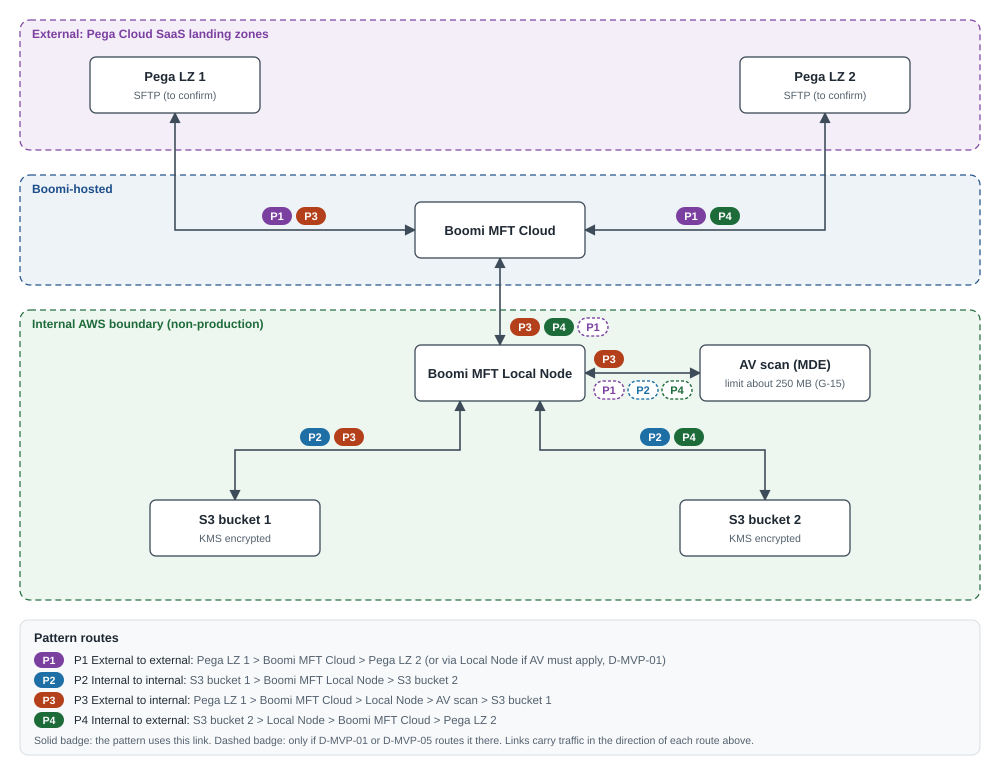

How to use this page
- Read the summary, then work through the findings. Use the severity buttons to show High items first.
- Download the concept note v0.3 redraft from the bar at the top. It applies every finding and keeps your structure (sections 1 to 7), adding section 8 (timeline) and 9 (risks). Copy the parts you accept into your own v0.2.
- Use suggested wording for line-level edits if you prefer to edit your own file.
- Replace your diagram with the corrected pattern diagram. Download the .drawio file, or use Open diagram in diagrams.net to view and edit it in the browser (File, Save as, to keep a copy).
- Download the test and evidence catalogue. Close the decisions sheet first; then record Status, Run date, Tester and Evidence link per test. The Summary and Success criteria sheets update themselves. Yellow cells are for input.
- All files (.zip) holds every document from this repo, including the SDEC diagrams.
1. Summary
- The note is short and the proposition is right: prove an operable service, not a file move. Keep that framing.
- Three things would stop a reviewer signing it off as written: the diagram labels make Patterns 1 and 2 look like transfers into the same place, no runtime is named per pattern (so AV coverage for Pattern 1 is unknown), and the success criteria are not measurable.
- Leftover text from the earlier single-feed candidate should go, and the in-scope items (CI/CD, security controls, negative testing) each need a matching success criterion.
- Add a decisions table with owners, the missing dependencies, a short timeline and the top risks. All of this is in the suggested v0.3 redraft and the test catalogue.
2. The four patterns (corrected diagram)
Changes from the v0.2 diagram: unique names for both landing zones and both buckets; every route drawn through Boomi; badges show which pattern uses each link; dashed badges mark links that depend on D-MVP-01 or D-MVP-05; AV scanning shown as its own step with the size limit.

| ID | Pattern | Source | Target | Route | Boundary | AV scanning |
|---|---|---|---|---|---|---|
| P1 | External to external | Pega LZ 1 | Pega LZ 2 | Pega LZ 1 > Boomi MFT Cloud > Pega LZ 2 (or via Local Node if AV must apply, D-MVP-01) | Stays outside the internal estate unless routed through the Local Node | Only if routed through the Local Node (D-MVP-01, D-MVP-05) |
| P2 | Internal to internal | S3 bucket 1 | S3 bucket 2 | S3 bucket 1 > Boomi MFT Local Node > S3 bucket 2 | Inside the internal AWS boundary only | Per policy (D-MVP-05) |
| P3 | External to internal | Pega LZ 1 | S3 bucket 1 | Pega LZ 1 > Boomi MFT Cloud > Local Node > AV scan > S3 bucket 1 | Inbound trust boundary crossing | Mandatory before the file lands internally |
| P4 | Internal to external | S3 bucket 2 | Pega LZ 2 | S3 bucket 2 > Local Node > Boomi MFT Cloud > Pega LZ 2 | Outbound trust boundary crossing | Per policy for outbound (D-MVP-05) |
3. Review findings
| ID | Section | Severity | Finding | Recommendation |
|---|---|---|---|---|
| F-01 | Document control | Medium | Still v0.2 dated 9 September 2026. The scope change from the earlier single-feed candidate to four platform patterns is not recorded. | Issue v0.3 dated 20 October 2026 with a one-line change note, and record the scope change as a decision with a named owner. |
| F-02 | 1. Objective | Low | Objective repeats the proposition and has nothing measurable. | Tie it to the four patterns and both trust-boundary directions, and point to the success criteria. |
| F-03 | 2. Chosen use case | Low | 'Non-Live/Non-Prod interface' suggests a single named interface, which no longer applies. | Use 'Non-production environment; four platform transfer patterns; no live interface'. |
| F-04 | 2. Chosen use case | Medium | External landing zone gives no access method, tenant or count. Pattern 1 needs two distinct external locations. | Name Pega LZ 1 and Pega LZ 2, state the access protocol (to confirm, D-MVP-02) and the owner. |
| F-05 | 2. Chosen use case and 7 | Medium | Internal landing zone is a single 'S3 bucket'. Pattern 2 needs a separate source and target. | Name S3 bucket 1 and S3 bucket 2 (or two prefixes with separate IAM policies, D-MVP-03). |
| F-06 | Diagram | High | Both Pega boxes are labelled 'Landing Zone 1' and both buckets 'S3 bucket 1', so Patterns 1 and 2 read as transfers into the same place. | Relabel as Pega LZ 1, Pega LZ 2, S3 bucket 1, S3 bucket 2. |
| F-07 | Diagram | High | Dashed pattern lines run endpoint to endpoint and bypass Boomi. Solid lines only point towards Boomi MFT Cloud, so outbound routes (P1, P4) are not shown. | Show the physical route through Boomi for each pattern, with a legend separating route from pattern. See the corrected diagram. |
| F-08 | Diagram and 5 | High | The note does not say which runtime runs each pattern. If P1 runs on Boomi MFT Cloud alone, the file never reaches the internally hosted AV and passes through Boomi-hosted infrastructure. | Add decision D-MVP-01 (runtime per pattern and where AV runs). State the data classification position for any cloud-only route. |
| F-09 | 3. What the MVP will prove | Low | AV appears in both columns; 'Monitoring and alerting failure' does not read; scheduling, API trigger and CI/CD (all in scope) are missing. | Restructure into four themes: secure transfer, operability, repeatable delivery, audit and governance. |
| F-10 | 4. Scope boundaries | Medium | 'Redesign of the retained downstream job chain' belongs to the earlier single-feed candidate and has no meaning for platform patterns. | Remove it. |
| F-11 | 4. Scope boundaries | Medium | Out of scope list omits items reviewers will ask about: live data, performance and volume, HA and DR failover, payload encryption (PGP), production go-live. | Add them explicitly, or move any you want tested into scope (D-MVP-10 for PGP). |
| F-12 | 4. Scope boundaries | Medium | API-triggered transfer is in scope but no caller or authentication is named. | Name the test client (for example a Postman collection against the Boomi API) and its auth method (D-MVP-09). |
| F-13 | 4 and 6 | High | CI/CD promotion is in scope, but there is no native pipeline for MFT configuration (G-13) and no success criterion for it. | Add SC-6: promote dev to test through the agreed mechanism with no re-keying; demonstrate rollback or record the gap (D-MVP-06). |
| F-14 | 5. Dependencies and decisions | Medium | Heading promises decisions but none are listed, and none have owners. | Add a decisions table with owner roles (D-MVP-01 to D-MVP-11). |
| F-15 | 5. Dependencies and decisions | Medium | Missing dependencies: Pega side allow-listing of Boomi egress IPs and accounts, AWS IAM and KMS, credential storage (G-14), alert destination, MFT entitlement in non-production, security approval to connect non-production to external SaaS. | Add them as numbered dependencies with owners. |
| F-16 | 5. Item 3 | Low | Sentence does not parse: 'test files confirmed file naming rules and confirmation of the data classification'. | 'Representative or synthetic test files agreed, with file naming rules and data classification confirmed.' |
| F-17 | 6. Success criteria | High | 'Proven' is not defined, so criterion 1 cannot be signed off. | Define pass per pattern: scheduled and API run, target SHA-256 equals source, audit record complete. |
| F-18 | 6. Success criteria | High | Negative-path testing is in scope but only three alerts are listed. No criterion that an infected or unscannable file is never delivered. | Add SC-4 and use the test catalogue (EICAR file, AV unavailable, target down, oversize file above the AV limit G-15, zero-byte, duplicate, bad name). |
| F-19 | 6. Success criteria | Medium | 'Scan failure' could mean an infected file or a scanner fault. Both need testing and the behaviour differs. | Split into AV detection (quarantine) and AV service failure (fail closed). |
| F-20 | 6. Success criteria | Medium | Security controls are in scope with no measurable criterion. | Add SC-7: TLS 1.2 or higher on every leg, credentials outside configuration, least-privilege IAM, encryption at rest. |
| F-21 | 6. Success criteria | Medium | No measure for alert timeliness or for scheduling robustness. | Set a target (for example alert within 15 minutes, five consecutive scheduled runs per pattern), to confirm under D-MVP-07. |
| F-22 | 7. Definition of done | Medium | No evidence pack, sign-off authority or gap treatment is named. | List the evidence pack, the sign-off roles and the rule that unmet criteria need an accepted gap with an owner. |
| F-23 | 7. Definition of done | Low | 'Operational support capabilities' are not defined anywhere else in the note. | Name the runbook, alert routing and support walk-through (SC-8). |
| F-24 | Not covered | Medium | Post-transfer handling of the source file (delete, archive, keep) is not stated. | Decide per pattern (D-MVP-08) and test it. |
| F-25 | Not covered | Medium | No timeline, roles or risks. Readers cannot judge readiness or effort. | Add a short timeline, owner roles and the top risks (sections 8 and 9 of the redraft). |
| F-26 | Header and footer | Low | Classification marking appears twice in the footer and once in the header. | Keep one marking in the header and one in the footer, per your document standard. |
4. Suggested wording
Original text in red, suggested text in green. The redraft also applies these.
| Section | v0.2 text | Suggested text |
|---|---|---|
| 1. Objective | Establish Boomi MFT within the estate and demonstrate secure, repeatable and operationally supportable managed file transfer capabilities across internal and external boundaries. | Establish Boomi MFT in non-production and demonstrate four transfer patterns covering both directions across the internal and external boundary, measured against the success criteria in section 6. |
| 2. MVP Scope | Non-Live/Non-Prod interface | Non-production environment; four platform transfer patterns; no live interface |
| 3. MFT Capabilities | AV Scan, Monitoring and alerting failure and establish re-usable patterns for future onboarding | Scheduled and API-triggered transfer, monitoring and alerting on failure, configuration promotion, and re-usable patterns for future onboarding |
| 5. Item 3 | Representative or synthetic test files confirmed file naming rules and confirmation of the data classification | Representative or synthetic test files agreed, with file naming rules and data classification confirmed |
| 7. Definition of done | ...the security, monitoring, deployment, audit and operational support capabilities of Boomi MFT have been validated. A recommendation will be provided regarding wider adoption | The MVP is complete when SC-1 to SC-8 are met, or any unmet criterion has an accepted gap with an owner; the evidence pack is signed off by the Boomi Platform Owner, Security Architect and Service Management Lead; and an adoption recommendation, including the position on G-13, G-14 and G-15, is presented to the Design Authority. |
Scope boundaries (suggested)
| In scope | Out of scope for the MVP |
|---|---|
|
|
5. Success criteria (revised)
Your four criteria are kept (SC-1, SC-2, SC-3, SC-5) and made measurable. SC-4, SC-6, SC-7 and SC-8 cover in-scope items that had no criterion. Targets are proposed and confirmed under D-MVP-07.
| ID | The MVP is successful when... | Origin |
|---|---|---|
| SC-1 | Each of the four patterns completes a scheduled and an API-triggered transfer, and the target SHA-256 matches the source. | Original 1 |
| SC-2 | Scheduled transfers run for at least five consecutive cycles per pattern with no manual intervention, and transfer history is visible end to end. | Original 2 |
| SC-3 | Non-arrival, transfer failure, AV detection and AV service failure each raise an alert to the agreed channel within the agreed time (target 15 minutes, D-MVP-07). | Original 3, split |
| SC-4 | An infected, unscannable or oversize file is never delivered to any target. | New |
| SC-5 | Every transfer creates an audit record with source, destination, file name, size, SHA-256, start and end timestamps, outcome and correlation ID. | Original 4 |
| SC-6 | Configuration is promoted from dev to test through the agreed mechanism with no manual re-keying; rollback is demonstrated or the gap is recorded against G-13. | New |
| SC-7 | Security controls are evidenced: TLS 1.2 or higher on every leg, credentials held outside configuration (or the G-14 interim control recorded), least-privilege IAM on S3, encryption at rest. | New |
| SC-8 | The support team can restart a failed transfer, replay a transfer and investigate a quarantined file using the draft runbook, without platform team help. | New |
Definition of done (suggested)
The MVP is complete when SC-1 to SC-8 are met, or any unmet criterion has an accepted gap with an owner; the evidence pack is signed off by the Boomi Platform Owner, Security Architect and Service Management Lead; and an adoption recommendation, including the position on G-13, G-14 and G-15, is presented to the Design Authority.
6. Dependencies and decisions
Decisions to log before build
| ID | Decision required | Owner role |
|---|---|---|
| D-MVP-01 | Runtime that executes each pattern (Boomi MFT Cloud or Local Node) and where AV scanning happens for each. | Boomi Platform Owner with Security Architect |
| D-MVP-02 | Pega landing zone access method, accounts and keys, and confirmation that two distinct zones are available. | Pega Landing Zone Owner |
| D-MVP-03 | Internal S3 layout (two buckets or two prefixes), IAM roles and KMS keys for the Local Node. | AWS Platform Owner |
| D-MVP-04 | Credential storage for non-production: vault or PAM, or an interim control (G-14). | Security Architect |
| D-MVP-05 | AV policy per pattern, maximum test file size against the AV limit (G-15, about 250 MB) and the behaviour for oversize files. | Boomi Platform Owner with Security Architect |
| D-MVP-06 | Configuration promotion mechanism for dev to test and how rollback is evidenced (G-13). | Boomi Platform Owner |
| D-MVP-07 | Alert channel for the MVP (email or Teams versus ServiceNow) and the alert response target. | Service Management Lead |
| D-MVP-08 | Post-transfer handling of the source file (delete, archive or keep) and the retention period. | Integration Architect |
| D-MVP-09 | API trigger client and its authentication method. | Integration Architect |
| D-MVP-10 | Whether payload encryption (PGP) is in or out of MVP scope. | Security Architect |
| D-MVP-11 | Sign-off authority for the evidence pack and the forum that receives the adoption recommendation. | Design Authority Chair |
Dependencies
| ID | Dependency | Owner role |
|---|---|---|
| DEP-01 | Boomi MFT runtimes available in non-production: Boomi MFT Cloud tenant and internally hosted Local Node, with AV (MDE) enabled. | Boomi Platform Owner |
| DEP-02 | End-to-end connectivity: firewall and allow-list rules for Local Node to Boomi MFT Cloud, and Boomi egress IPs allow-listed on the Pega side. | Infrastructure Lead |
| DEP-03 | Two Pega landing zones with accounts and keys for Boomi. | Pega Landing Zone Owner |
| DEP-04 | Two S3 locations with IAM roles and KMS keys granted to the Local Node. | AWS Platform Owner |
| DEP-05 | Representative or synthetic test files agreed, with file naming rules and data classification confirmed (including whether the data may be held in external SaaS). | Integration Architect with Data Owner |
| DEP-06 | Credential storage arrangement agreed (D-MVP-04). | Security Architect |
| DEP-07 | Alert destination set up and reachable (D-MVP-07). | Service Management Lead |
| DEP-08 | Security approval to connect non-production to external SaaS. | Security Architect |
7. Test and evidence catalogue
Fifteen scenarios run against each pattern, plus ten platform tests run once. AV tests (06, 07, 13) apply to P1, P2 and P4 only if D-MVP-01 or D-MVP-05 puts AV on that route; mark them Not applicable otherwise.
| Pattern | Tests |
|---|---|
| P1 External to external | 15 |
| P2 Internal to internal | 15 |
| P3 External to internal | 15 |
| P4 Internal to external | 15 |
| All (platform) | 10 |
| Total | 70 |
Per-pattern scenarios
| # | Type | Scenario | Expected result | Criteria | Priority |
|---|---|---|---|---|---|
| 01 | Positive | Scheduled transfer, single file | File at target; SHA-256 matches source; audit record complete. | SC-1, SC-5 | Must |
| 02 | Positive | API-triggered transfer, single file | File at target; SHA-256 matches; audit record shows API trigger. | SC-1, SC-5 | Must |
| 03 | Positive | Multiple files in one run | All five delivered; one audit record each. | SC-1, SC-5 | Should |
| 04 | Positive | Consecutive scheduled runs | Five successful runs, no manual intervention. | SC-2 | Must |
| 05 | Positive | Source handling after transfer | Source file deleted, archived or kept as per D-MVP-08. | SC-1 | Should |
| 06 | Negative | Infected file (EICAR test file) | File quarantined, not delivered; alert raised; audit outcome shows quarantine. | SC-3, SC-4 | Must |
| 07 | Negative | AV service unavailable | Transfer held (fail closed); alert raised; nothing delivered unscanned. | SC-3, SC-4 | Must |
| 08 | Negative | Target unavailable or credentials rejected | Retries per policy, then failure alert; no partial file at target. | SC-3 | Must |
| 09 | Negative | Non-arrival | Non-arrival alert raised within target time. | SC-3 | Must |
| 10 | Negative | Zero-byte file | Handled per agreed rule (reject or transfer) with audit outcome. | SC-5 | Should |
| 11 | Negative | File name breaks naming rule | Not transferred; alert or audit outcome shows rejection. | SC-3, SC-5 | Should |
| 12 | Negative | Duplicate file name at target | Handled per agreed rule (overwrite, version or reject) with audit. | SC-5 | Should |
| 13 | Negative | File above AV size limit (G-15) | Deterministic outcome per D-MVP-05; never delivered unscanned; alert raised. | SC-4 | Must |
| 14 | Positive | Largest permitted file within AV limit | Delivered and scanned; duration recorded for sizing. | SC-1 | Should |
| 15 | Negative | Interrupted transfer | Resume or restart; no corrupt or partial file left at target. | SC-1, SC-3 | Should |
Platform tests
| ID | Test | Expected result | Criteria | Priority |
|---|---|---|---|---|
| PL-01 | Promote pattern configuration dev to test | Configuration in test matches dev with no re-keying. | SC-6 | Must |
| PL-02 | Roll back a promoted configuration | Previous configuration restored, or gap recorded against G-13. | SC-6 | Must |
| PL-03 | Credentials not visible in configuration or logs | No secrets in exports or logs; vault or interim control evidenced (G-14). | SC-7 | Must |
| PL-04 | TLS version on every leg | TLS 1.2 or higher on Pega, Boomi Cloud, Local Node and S3 legs. | SC-7 | Must |
| PL-05 | Encryption at rest on S3 | Bucket encryption with the agreed KMS key. | SC-7 | Must |
| PL-06 | Least-privilege IAM for the Local Node | Role can only read source and write target prefixes. | SC-7 | Must |
| PL-07 | Audit extract for all MVP runs | Every run has all SC-5 fields; export usable by an auditor. | SC-5 | Must |
| PL-08 | Role-based access in Boomi MFT | Operator cannot change configuration; admin can. | SC-7 | Should |
| PL-09 | Alert routing reaches the agreed channel | Alerts land in the channel within target time. | SC-3 | Must |
| PL-10 | Runbook walk-through | Support restarts, replays and investigates a quarantined file unaided. | SC-8 | Must |
8. Risks and indicative timeline
| ID | Risk | Impact / Likelihood | Mitigation | Owner role |
|---|---|---|---|---|
| R-MVP-01 | Firewall and allow-list lead times delay P3 and P4. | High / High | Raise change requests at note sign-off; test connectivity first. | Infrastructure Lead |
| R-MVP-02 | P1 routed through Boomi MFT Cloud bypasses internal AV; files above about 250 MB cannot be scanned (G-15). | High / Medium | Settle D-MVP-01 and D-MVP-05 before build; keep test files under the limit plus one oversize negative test. | Boomi Platform Owner |
| R-MVP-03 | No native CI/CD for MFT configuration (G-13), so SC-6 may not be met. | Medium / High | Agree the mechanism under D-MVP-06; record the gap if rollback cannot be shown. | Boomi Platform Owner |
| R-MVP-04 | No native PAM integration (G-14) leads to manual credential handling. | Medium / High | Interim controlled process with audit; record in the evidence pack. | Security Architect |
| R-MVP-05 | Pega landing zone access (two zones, accounts, keys) arrives late. | Medium / Medium | Confirm D-MVP-02 in week 0; P2 can start without it. | Pega Landing Zone Owner |
| R-MVP-06 | External SaaS may not accept representative data. | Medium / Medium | Default to synthetic files for P1, P3 and P4. | Integration Architect |
| R-MVP-07 | ServiceNow and Dynatrace are out of scope, so operational readiness is shown by email or Teams alerts only. | Low / High | State this limit in the recommendation. | Service Management Lead |
Indicative timeline
| When | Stage | Exit |
|---|---|---|
| Week 0 | Readiness | Decisions D-MVP-01 to 05 closed, connectivity tested, accounts and test files in place. |
| Week 1 | Build and positive tests | Configure four patterns, schedules and API trigger; run SC-1, SC-2, SC-5. |
| Week 2 | Negative and operational tests | Run negative catalogue, alerts, promotion and security checks; SC-3, SC-4, SC-6, SC-7, SC-8. |
| Week 3 | Evidence and recommendation | Assemble evidence pack, sign-off, adoption recommendation to Design Authority. |
9. Files in this release
| File | What it is |
|---|---|
| boomi-mft-mvp-concept-note-v0.3.docx | Suggested v0.3 redraft of the executive concept note, with corrected diagram, decisions, revised criteria, timeline and risks. |
| boomi-mft-mvp-test-catalogue.xlsx | Test and evidence catalogue: 70 tests, summary, success criteria tracking, findings, decisions, dependencies, risks. |
| boomi-mft-mvp-patterns.drawio | Editable corrected pattern diagram (diagrams.net). |
| boomi-mft-mvp-patterns.png, boomi-mft-mvp-patterns.svg | Rendered diagram for documents and slides. |